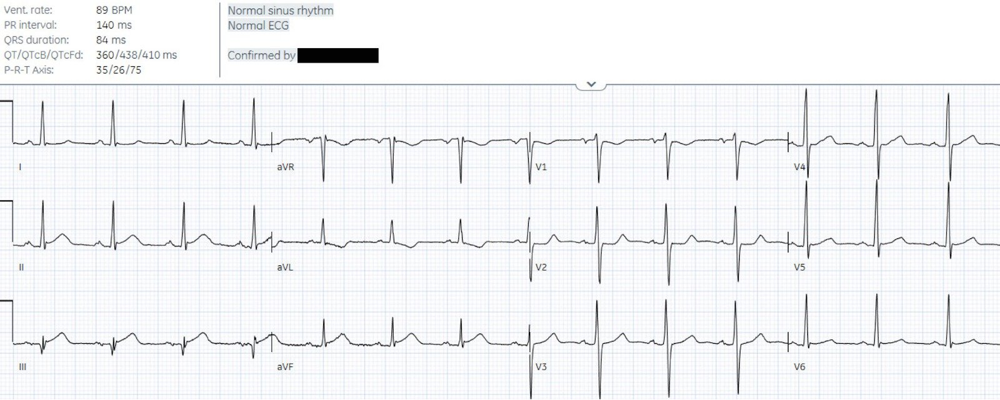
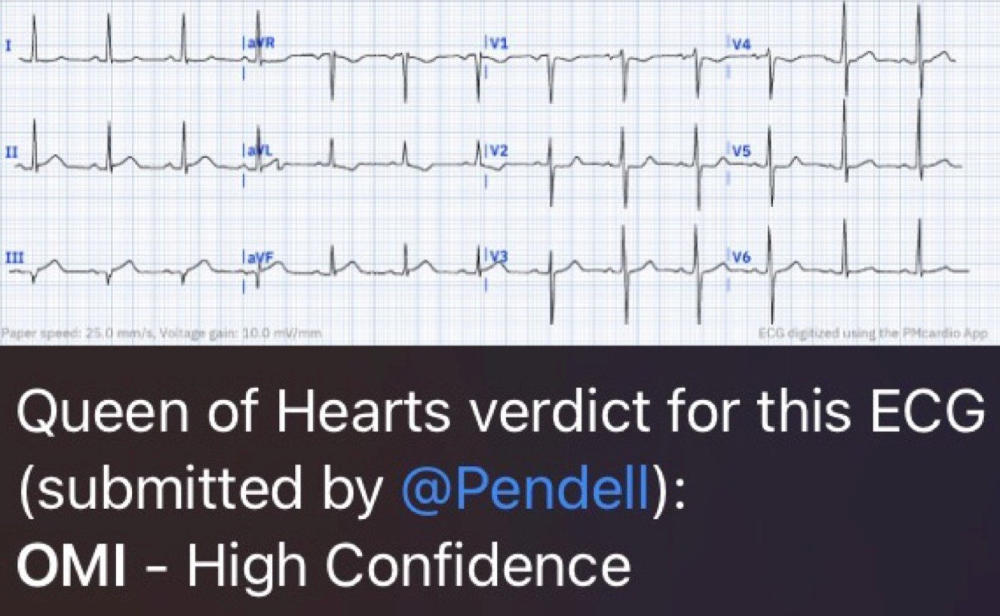
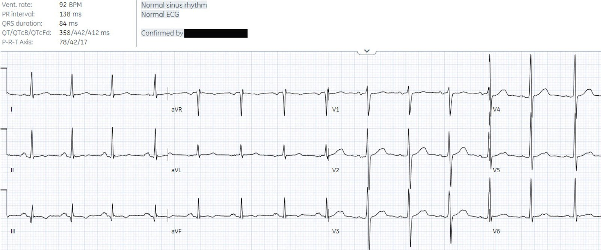
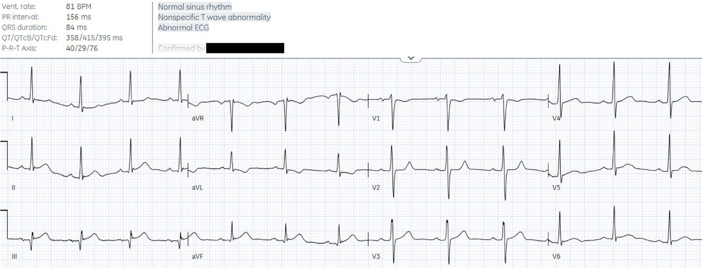
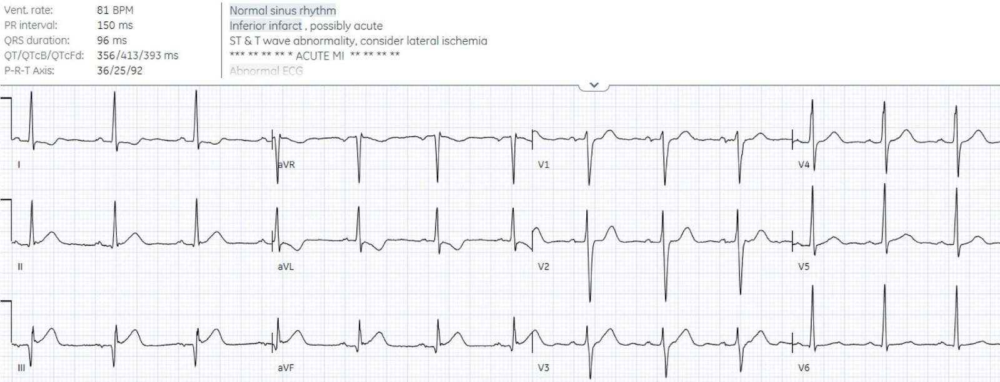
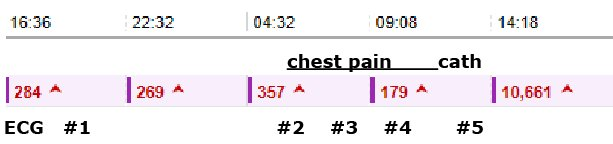
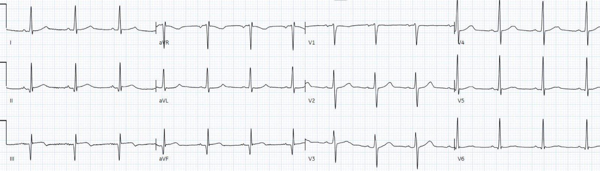
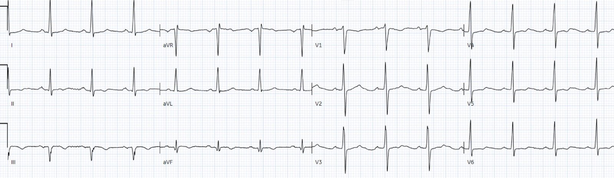
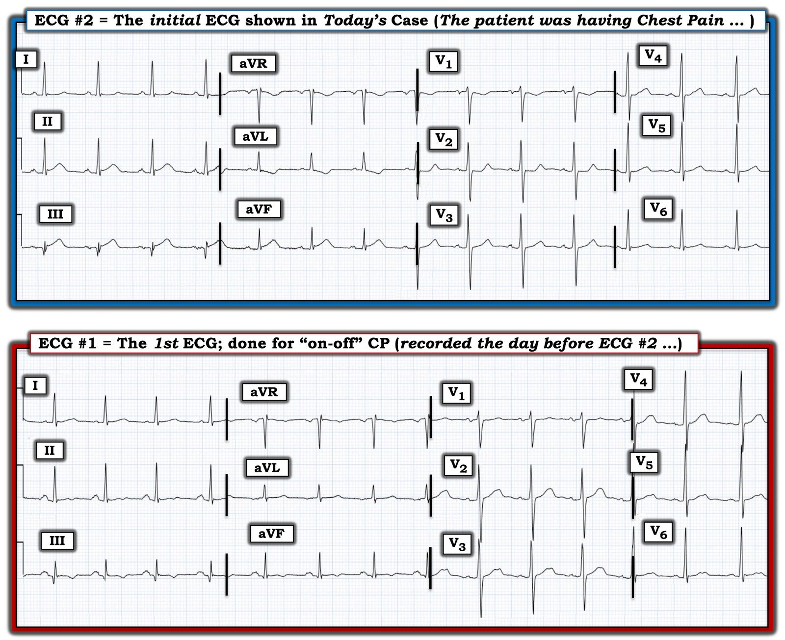

21/04/2023 — Bệnh nhân 50 tuổi đau ngực cấp, điện tâm đồ ‘bình thường’ và troponin đang giảm
Bản dịch tiếng Việt của bài "50 year old with acute chest pain, with ‘normal’ ECG and falling troponin" – Dr. Smith’s ECG Blog. Giữ nguyên toàn bộ 11 hình ảnh của bản gốc.
Tác giả: Jesse McLaren, kèm bình luận của Smith
Một bệnh nhân 50 tuổi đang nằm tại khoa nội xuất hiện đau ngực
cấp, với điện tâm đồ được máy gắn nhãn (xem kết quả đọc bằng máy tính ở phía trên) và được bác sĩ tim mạch đọc lại (overread) xác nhận là bình thường. Bạn
nghĩ sao?


(Thuật toán Marqette 12SL)
Nhịp xoang bình thường, dẫn truyền bình thường, trục bình thường,
tăng tiến sóng R bình thường, và điện thế bình thường. Chuyển đạo aVL nổi bật là bất thường
vì có sóng T đảo ngược ngược hướng (discordant) và ST chênh xuống nhẹ. Đây là thay đổi soi gương (reciprocal) với ST chênh lên nhẹ
ở thành dưới và sóng T tối cấp (đáy rộng, đầy đặn và đối xứng, ở III cao hơn
phức bộ QRS), đồng thời liền kề với ST chênh xuống ở V2.
Hình ảnh này có giá trị chẩn đoán
OMI dưới-sau.
Tôi gửi điện tâm đồ cho BS. Meyers mà không kèm bất kỳ thông tin nào khác.
Anh ấy dự đoán tắc RCA và thử nghiệm mô hình AI mà anh ấy cùng BS. Smith đang huấn luyện để
nhận diện OMI:


Bệnh nhân quả thực bị tắc RCA 100%, với troponin I đỉnh trên 10.000 ng/L. Như vậy theo mô hình OMI, AI được chuyên gia huấn luyện sẽ giúp
nhân viên y tế nhận diện OMI và bệnh nhân này lẽ ra đã được kích hoạt phòng thông tim
ngay lập tức, không cần chờ điện tâm đồ ghi lại hay kết quả troponin. Bây giờ hãy
so sánh với mô hình hiện hành để chỉ ra nhiều sự chậm trễ có thể phòng tránh được trong
tái tưới máu, những chậm trễ có thể được cải thiện nhờ chuyển đổi mô hình từ STEMI sang OMI.
1. Điện tâm đồ được gắn nhãn‘bình thường’
Ban đầu bệnh nhân nằm ở khoa nội để điều trị ung thư, và được ghi nhận có đau
ngực lúc có lúc không, với troponin I tăng nhẹ quanh mức 300 ng/L. Một ngày trước điện tâm đồ ở trên, điện tâm đồ ban đầu dưới đây (điện tâm đồ #1) cho thấy sóng T đảo ngược
tối thiểu ở thành dưới:


(Thuật toán Marqette 12SL)
Vì vậy bệnh nhân đang được điều trị
như “nhồi máu cơ tim không ST chênh lên (Non-STEMI)” bằng thuốc kháng tiểu cầu và heparin, và được xét nghiệm troponin
mỗi 6 giờ. Ngày hôm sau, bệnh nhân xuất hiện đau ngực
tái phát kèm buồn nôn, và một điện tâm đồ được ghi (điện tâm đồ #2, chính là điện tâm đồ ở
đầu bài này, in lại ở đây để so sánh với điện tâm đồ trước):
So với điện tâm đồ trước, điện tâm đồ ghi lúc đang đau ngực nay có sóng T thành dưới
dương (giả bình thường hóa) và tối cấp, đồng thời thay đổi soi gương
ở aVL và ST chênh xuống ở V2 cũng mới xuất hiện. Điều này xác nhận
OMI dưới-sau với mức chắc chắn còn cao hơn.
Nhiều người muốn tin
rằng các điện tâm đồ được kết quả đọc bằng máy tính truyền thống gắn nhãn ‘bình thường’ thì ít khả năng
có ý nghĩa lâm sàng, và đôi khi dùng kết quả đọc
cuối cùng của bác sĩ tim mạch (thay vì kết cục của bệnh nhân) làm tiêu chuẩn tham chiếu.
Nhưng đây là một trong rất nhiều
ca làm nổi bật giả định nguy hiểm này. Điện tâm đồ này có giá trị chẩn đoán OMI
nhưng STEMI âm tính, tức là OMI STEMI âm tính (STEMI(-)OMI), và đã được gắn nhãn rồi được xác nhận bởi một bác sĩ tim mạch là
‘bình thường’, nên bệnh nhân được cho nitro và đánh giá lại.
Bình luận của Smith: Các bác sĩ tim mạch, cũng như mọi nhân viên y tế có đọc điện tâm đồ, là một nhóm rất không đồng nhất về khả năng đọc điện tâm đồ. Một số người đọc xuất sắc, một số thì không được như vậy. Các bác sĩ tim mạch quả thực rất thông minh, giàu kinh nghiệm, có nền tảng kiến thức đồ sộ, và luôn làm hết sức mình vì bệnh nhân. Nhưng tim mạch học là một chuyên ngành rất rộng lớn, và đọc điện tâm đồ để phát hiện OMI chỉ là một phần rất nhỏ trong đó. Nhỏ đến mức hầu hết bác sĩ tim mạch chưa từng nghe đến “OMI”, dù thuật ngữ này hiện đã có trong y văn của chính họ (xem dòng thời gian y văn về OMI tại đây). Đọc điện tâm đồ để phát hiện OMI chủ yếu là nhận dạng hình ảnh (pattern recognition). Không có phép đo nào đáng tin cậy. Những người có kỹ năng nhận dạng hình ảnh tốt, biết về OMI, và đã dành nhiều thời gian học các hình ảnh trên những bệnh nhân đã biết kết cục, đều giỏi kỹ năng này, dù họ là kỹ thuật viên điện tâm đồ như Vince DiGiulio (người sau này trở thành kỹ thuật viên cấp cứu y tế – EMT) hay là những bác sĩ can thiệp hiếm hoi, như Emre Aslanger, những người nắm được nhiều dấu hiệu điện tâm đồ tinh tế của OMI cấp.
Vì vậy, nhìn chung không nên dùng bác sĩ tim mạch làm tiêu chuẩn tham chiếu cho việc đọc OMI trên điện tâm đồ, dù trong thực hành lâm sàng hay trong các bài báo nghiên cứu.
2. Các điện tâm đồ liên tiếp
Một giờ sau, khi đau
ngực vẫn kéo dài, điện tâm đồ được ghi lại (điện tâm đồ #3) cùng với xét nghiệm troponin:


Điện tâm đồ này vẫn chưa đạt tiêu chuẩn
STEMI, và lúc này được máy tính và người đọc lại diễn giải là “không đặc hiệu”,
nhưng nó vẫn rất đặc hiệu cho OMI dưới-sau. Trong mô hình STEMI, bệnh nhân
có triệu chứng thiếu máu cục bộ và điện tâm đồ không đạt tiêu chuẩn STEMI sẽ được ghi các điện tâm đồ liên tiếp.
Nhưng tiêu chuẩn STEMI có độ nhạy kém đối với tắc mạch vành cấp. Hệ
quả là bệnh nhân STEMI(-)OMI có thể được ghi các điện tâm đồ liên tiếp lặp đi lặp lại
cho thấy chẩn đoán OMI nhưng lặp đi lặp lại không đạt tiêu chuẩn STEMI.
Các điện tâm đồ này thường KHÔNG BAO GIỜ tiến triển đến mức đạt tiêu chuẩn STEMI; và LUÔN LUÔN tiến triển quá muộn so với thời điểm can thiệp tối ưu. Điều này dẫn tới những chậm trễ có thể phòng tránh
trong tái tưới máu: bệnh nhân phải chờ thêm một giờ nữa để có kết quả
troponin.
3. Troponin ban đầu
Nhưng nồng độ troponin lại giảm từ 357 xuống 179 ng/L, vì
mức troponin tăng nhẹ trước đó đang giảm dần vào thời điểm tắc mạch, và troponin
lặp lại chỉ được đo một giờ sau khi khởi phát triệu chứng.
Troponin giống như chiếc gương
chiếu hậu, cho thấy tổn thương đã xảy ra trong quá khứ. Giống như nồng độ hemoglobin ban đầu trong
xuất huyết cấp, troponin ban đầu trong tắc mạch vành cấp có thể
trấn an một cách sai lầm. Điều này thường biểu hiện ở những bệnh nhân tắc mạch vành
cấp có mức troponin đầu tiên nằm trong giới hạn bình thường, nhưng trong ca này
troponin trước đó đã tăng nhẹ và đang giảm dần vào thời điểm tắc mạch.
Smith: định nghĩa nhồi máu cơ tim dựa trên tiêu chuẩn lâm sàng và troponin. Yếu tố troponin là có ít nhất một giá trị troponin trên bách phân vị thứ 99 của giới hạn trên tham chiếu (URL) kèm tăng và/hoặc giảm. Như vậy bệnh nhân có thể được chẩn đoán nhồi máu cơ tim cấp và có đau ngực tái phát. Riêng hai yếu tố này đã đủ để kích hoạt phòng thông tim ngay cả khi điện tâm đồ không cho thấy OMI (hoặc có cho thấy nhưng bạn không nhận ra – hoặc máy tính không nhận ra)!!
Theo mô hình STEMI,
một bệnh nhân có các điện tâm đồ liên tiếp được gắn nhãn ‘bình thường’ và ‘không đặc hiệu’ thì không cần
tái tưới máu, nhất là khi troponin đang giảm. Nhưng theo mô hình
OMI, bệnh nhân này có điện tâm đồ mang tính chẩn đoán và đau ngực kháng trị, hai
chỉ định tái tưới máu cấp cứu bất chấp troponin còn sớm và không đáng tin cậy.
Bất chấp mức troponin, bệnh nhân vẫn đau kháng trị nên một điện tâm đồ khác được ghi lại (điện tâm đồ #4):


Có giá trị chẩn đoán
OMI dưới-sau lần thứ ba, và lúc này đạt tiêu chuẩn STEMI lần
đầu tiên, hai giờ sau đó. Vì vậy phòng thông tim được kích hoạt và phát hiện tắc RCA 100%, đúng như dự đoán từ điện tâm đồ đầu tiên. Troponin tăng trên 10.000 ng/L sau chụp mạch vành nhưng không được theo dõi đến đỉnh.
Dưới đây là diễn tiến trong khoảng 22 giờ quanh thời điểm tắc mạch vành cấp, cho thấy troponin đi sau so với triệu chứng và điện tâm đồ:


Khoảng
thời gian trước khi tắc mạch bao gồm điện tâm đồ #1 và các giá trị troponin liên tiếp
từ 284 đến 269 rồi 357. Khi bệnh nhân bị tắc mạch vành
cấp, bệnh nhân được ghi các điện tâm đồ liên tiếp #2-4, trong đó điện tâm đồ cuối cùng dẫn đến kích hoạt phòng thông tim bất chấp troponin đang giảm – và troponin lặp lại sau tái tưới máu cao hơn 10.000.
Điện tâm đồ sau chụp mạch vành (điện tâm đồ #5) cho thấy
sóng Q ở thành dưới, với sóng T xẹp xuống và bắt đầu đảo ngược, và thay đổi soi gương
ở aVL đã biến mất:


Điện tâm đồ vài ngày sau cho thấy
sóng T tái tưới máu đảo ngược ở thành dưới:


Điều cần nhớ
1.
Các điện tâm đồ được máy thông thường gắn nhãn ‘bình thường’
(và được người đọc lại xác nhận) vẫn có thể mang tính chẩn đoán OMI, và được nhận diện
bởi các chuyên gia về OMI và mô hình AI do họ huấn luyện
2.
Ghi các điện tâm đồ liên tiếp để tìm tiêu chuẩn STEMI có thể
liên tục bỏ sót STEMI(-)OMI, dẫn đến những chậm trễ có thể phòng tránh trong tái tưới máu
3. Nồng độ troponin đi sau, và có thể trấn an một cách sai lầm ở giai đoạn sớm sau tắc mạch

===================================
BÌNH LUẬN CỦA TÔI, bởi KEN GRAUER, MD (21/4/2023):
===================================
Tôi xin bổ sung Điểm cần nhớ sau đây vào phần bàn luận xuất sắc về ca hôm nay của BS. McLaren:
- ĐIỂM THEN CHỐT (PEARL): Điều vẫn còn bị bỏ qua quá thường xuyên là lợi ích tiềm năng có được từ việc đối chiếu sự hiện diện và mức độ tương đối của đau ngực — CP (Chest Pain) — với thời điểm ghi từng điện tâm đồ liên tiếp. Thật DỄ để thấy rằng thông tin vô giá này vẫn thường xuyên bị bỏ qua đến vậy — chỉ cần nhìn vào sự thiếu vắng ghi chú, dù trên từng điện tâm đồ liên tiếp hay trong hồ sơ bệnh án, về việc bệnh nhân có (hay không) đau ngực (và nếu có — nặng đến mức nào?) — vào đúng thời điểm ghi mỗi điện tâm đồ.
Hình 1 là cách tốt nhất để minh họa Điểm then chốt ở trên — bằng cách NHÌN LẠI và so sánh 2 điện tâm đồ đầu tiên được ghi trong ca hôm nay:


Nhìn lại các điện tâm đồ trong Hình 1:
- Ca hôm nay bắt đầu bằng việc chúng ta được xem điện tâm đồ #2 trước tiên. Ngay cả khi không có thông tin lâm sàng — bản ghi này phải được xem là rất đáng nghi ngờ một biến cố cấp đang diễn ra (đúng như cách nó được BS. Meyers và chương trình AI Queen of Hearts diễn giải ngay lập tức). Hoàn toàn không thể nào đoạn ST dẹt (nếu không muốn nói là hơi dốc xuống) ở chuyển đạo V2 lại là “bình thường” (tức là, Đoạn ST ở các chuyển đạo V2,V3 phải dốc lên nhẹ nhàng — và thường hơi chênh lên như một dấu hiệu bình thường).
- Như đã trình bày trong hình minh họa đầu tiên của phần bàn luận của BS. McLaren — kết quả đọc bằng máy tính của điện tâm đồ #2 là “điện tâm đồ bình thường”. Trước khi có chương trình AI Queen of Hearts — tôi chưa từng thấy một chương trình đọc điện tâm đồ bằng máy tính nào đủ nhạy để phát hiện các OMI không STEMI tinh tế, do đó: i) Bác sĩ lâm sàng luôn cần đọc lại kết quả đọc bằng máy tính trong bối cảnh tình huống lâm sàng; và, ii) Vì bệnh nhân trong ca hôm nay đang bị đau ngực dữ dội vào thời điểm ghi điện tâm đồ #2 — phải đưa ra chẩn đoán xác định OMI dưới-sau cấp (theo BS. McLaren)!
- NHƯNG — bệnh nhân này đã được nhập khoa nội tổng quát từ ngày hôm trước, lúc đó điện tâm đồ #1 đã được ghi. Lý do bệnh nhân này nhập viện ngày hôm trước là để điều trị ung thư. Triệu chứng của anh ấy lúc đó là đau ngực “lúc có lúc không” — và anh ấy có troponin tăng ở một mức độ nào đó kèm theo điện tâm đồ #1.
- BÂY GIỜ — Hãy hình dung ca hôm nay bắt đầu bằng việc chúng ta được xem điện tâm đồ #1, kèm thông tin rằng bệnh nhân đang đau ngực “lúc có lúc không” — và một giá trị troponin ban đầu đã có tăng phần nào. Dù không có ST chênh lên trên điện tâm đồ #1 — sự kết hợp giữa đau ngực từng cơn (giảm vào thời điểm ghi điện tâm đồ #1) — với sóng T đảo ngược nông ở cả 3 chuyển đạo thành dưới — lẽ ra phải ít nhất gợi ý khả năng tái tưới máu tự phát — NẾU các bác sĩ điều trị đối chiếu bệnh sử với những dấu hiệu tinh tế-nhưng-có-thật này trên điện tâm đồ #1.
- Xin nhấn mạnh: Dù bản thân điện tâm đồ #1 không mang tính chẩn đoán OMI cấp — NẾU nhóm điều trị đối chiếu các dấu hiệu điện tâm đồ của bản ghi này với bệnh sử đau ngực từng cơn và với thực tế là troponin đã có tăng — Thì rõ ràng cần theo dõi sát hơn (có lẽ không còn ở khoa nội tổng quát nữa) kèm ghi lặp lại ít nhất vài điện tâm đồ để bảo đảm không có quá trình bệnh lý cấp đang diễn ra.
Một khi đã có điện tâm đồ #2 trong tay …
- Tất cả những gì cần làm là — i) Lưu ý rằng lý do ghi điện tâm đồ #2 là vì bệnh nhân lúc này đau ngực tăng lên; và, ii) So sánh từng chuyển đạo một hình dạng của điện tâm đồ #2 với điện tâm đồ #1 (việc này hẳn sẽ dễ dàng khi đặt 2 bản ghi này cạnh nhau — như trong Hình 1). Theo BS. McLaren — so sánh 2 bản ghi này xác nhận có thay đổi điện tâm đồ cấp động — mà NẾU được đối chiếu với bệnh sử đau ngực lúc này đã dữ dội — thì bắt buộc phải thông tim ngay.
- Sinh lý bệnh của diễn tiến OMI cấp thường bao gồm một giai đoạn tái tưới máu tự phát, đôi khi chỉ thoáng qua trước khi xảy ra tắc lại tự phát. NẾU bác sĩ lâm sàng cẩn thận đối chiếu sự hiện diện (và mức độ tương đối) của đau ngực với thời điểm ghi từng điện tâm đồ liên tiếp — họ thường có thể nhận ra khi nào tái tưới máu tự phát đã xảy ra vì: i) Điều này thường đi kèm với giảm (nếu không muốn nói là hết hẳn) đau ngực; và, ii) Các thay đổi điện tâm đồ cấp (tức là, ST chênh lên và chênh xuống) giảm đi, nếu không muốn nói là trở về bình thường trên đường hình thành hình ảnh điển hình của sóng T tái tưới máu (tức là, sóng T đảo ngược ở các chuyển đạo trước đó có ST chênh lên). Tất cả những gì (các) bác sĩ điều trị cần làm — là đối chiếu sự hiện diện (và mức độ tương đối) của triệu chứng đau ngực với các điện tâm đồ liên tiếp. Làm như vậy thường khiến chẩn đoán OMI cấp trở nên hiển nhiên.